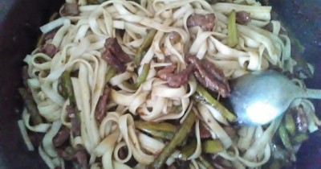

Китайская лапша с говядиной и спаржей в соусе терияки

Ингредиенты
- Говядина - 200 гр
- Лапша (одна упаковка лапши. можно брать яичную, гречневую или пшеничную.) - 400 гр
- Спаржа зеленая - 50 гр
- Соевый соус - 4 стол.л.
- Соус Терияки - 4 стол.л.
- Чеснок - 1 стол.л.
Рецепт приготовления
- Взять говядину. Хорошо просушить бумажным полотенцем. Нарезать на брусочки толщиной 0,5 мм и длиной 2-3 см. Разогреть сковороду. Добавить масло. Как только сковорода прогреется - закинуть говядину. Обжарить 3-4 минуты на сильном огне помешивая каждую минуту. Если выделяется много влаги, то тушить до полного испарения воды (на медленном огне). Если нет,то добавить 2-3 столовые ложки воды и протушить.
- Добавить размороженную и нарезанную на три части спаржу. Обжарить еще минуты две (важно, чтобы спаржа не потеряла свой цвет).
- Готовим соус: 4 ст. ложки терияки + 4 ст. ложки соевого соуса (ориентируйтесь на вкус, т.к. терияки может быть более или менее соленым), добавьте один зубчик чеснока пропущенного через пресс. Тщательно перемешайте и добавьте в сковороду. Помешивая содержимое сковородки распределите соус так, чтобы он обволакивал говядину. Сварите лапшу до состояния альденте, добавьте кусочек сливочного масла ( 1 ст.ложку не полную).
- Соедините лапшу с мясом. Тщательно перемешайте. приятного аппетита)
Вернуться к списку блюд